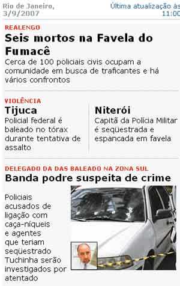

Não importa se você quer ser Policial Civil, Policial Militar ou Policial Federal.
A pena de morte já foi declarada neste pedacinho do Brasil.
O problema maior é quando além de ser policial, além de lutar para acabar com a marginalidade e o tráfico, você resolve que tem que acabar acima de tudo com a chamada "banda podre" de sua corporação. Aí o perigo vem de todos os lados.
Não interessa se você passa numa blitze falsa organizada por marginais ou por uma viatura policial de verdade. Todos podem ser seus inimigos. Inclusive o Governo do Estado.

" De tanto ver triunfar as nulidades, de tanto ver crescer as injustiças, de tanto ver agigantarem-se os poderes nas mãos dos maus, o homem chega a desanimar-se da virtude, a rir-se da honra e a ter vergonha de ser honesto". RUI BARBOSA